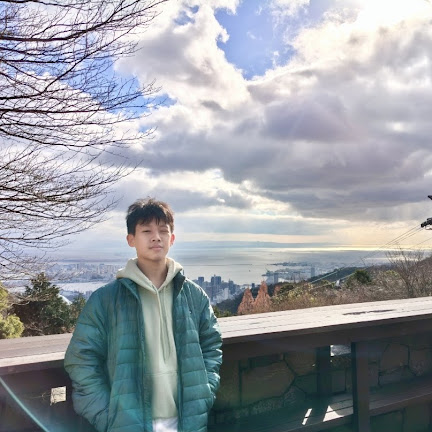

Hi, I’m Matthew Kusnanto, a 14-year-old student from Santa Laurensia Junior High School, class 9C.
I created WaterForTomorrow to raise awareness about the global water crisis and show how small actions can make a big difference.
This project combines creativity, technology, and real-world issues to inspire others to care about our planet.